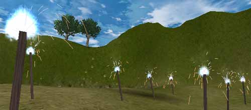
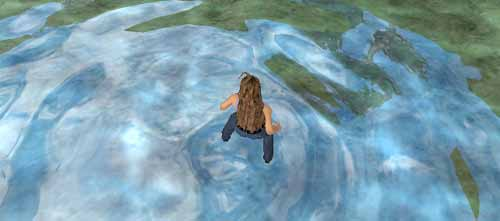
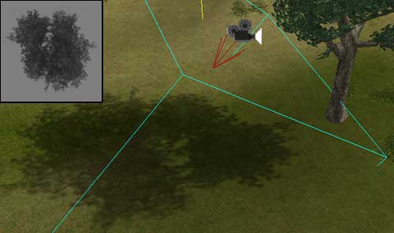

UDN
Search public documentation:
UnrealEngine2FeaturesMatineeJP
English Translation
한국어
Interested in the Unreal Engine?
Visit the Unreal Technology site.
Looking for jobs and company info?
Check out the Epic games site.
Questions about support via UDN?
Contact the UDN Staff
한국어
Interested in the Unreal Engine?
Visit the Unreal Technology site.
Looking for jobs and company info?
Check out the Epic games site.
Questions about support via UDN?
Contact the UDN Staff
Unreal Ed フィーチャー Matinee ムービー
ドキュメントの概要: ここでは、Matinee ムービーで紹介されている Unreal Engine のフィーチャーのいくつかを紹介します｡ ドキュメントの変更ログ: Jason Lentz (DemiurgeStudios?)により作成目的で最終編集｡ Tom Lin によるMatinee とモデリングの協力に感謝します｡ 原作者 : Jason Lentz (DemiurgeStudios?)はじめに
この文書はMatinee ムービーと共にご使用ください（AVI フォームでも入手可能）。ムービーはこのページの 一番下 からダウンロードできます。Matinee とはゲーム内でのゲーム作成ツールで、ゲーム開始と同時に再生されます｡この文書に含まれるMatinee ムービーは、Unreal ランタイム エンジンのフィーチャーを利用するとどのようにリアルで魅力的な環境を作成できるかをデモンストレーションしています。ここでは様々なフィーチャーについて詳しく説明し、それぞれの詳細を記したリンクも参照できます｡ このフィーチャー プレビューは、Unreal Engine 2 のファイナル ビルドをベースにした UnrealEngine2 ランタイムで作動します｡Unreal Tournament 2004 で追加されたフィーチャーは含まれません｡ Unreal Engine フィーチャーに関する詳細は、「UnrealEngine2 フィーチャー」を参照してください｡ジオメトリの種類
Matinee のムービーは、まずはじめに異なる種類のジオメトリの例を紹介します｡Unreal Engine には様々な種類のジオメトリがあり、目的に応じて最適な使い方が出来ます｡下はMatinee ムービーで紹介しているジオメトリの簡単な説明です｡静的メッシュ (静的ジオメトリ)
 静的メッシュ は、Unreal でもっともよく使われるジオメトリのタイプです｡これらは静的ジオメトリとして使うようにデザインされており、静的メッシュはレンダリング時間の早さによりシーンに配された場合高品質を保ちます｡一般的に、環境にディテールを加えビジュアルな構成を与えるために使われます｡このマップでは、静的メッシュは木、建物、地下への開口部分、地下の大部分のデコレーションに使われています｡
静的メッシュはその他にも、ムーバーズ（連続したキーフレーム ポジションと共に移動するメッシュ）、デコレイヤー（次の項で説明）、パーティクル システムのパーティクル、骨格メッシュの添付など、その他のジオメトリのタイプのベースにも使われます｡
静的メッシュ は、Unreal でもっともよく使われるジオメトリのタイプです｡これらは静的ジオメトリとして使うようにデザインされており、静的メッシュはレンダリング時間の早さによりシーンに配された場合高品質を保ちます｡一般的に、環境にディテールを加えビジュアルな構成を与えるために使われます｡このマップでは、静的メッシュは木、建物、地下への開口部分、地下の大部分のデコレーションに使われています｡
静的メッシュはその他にも、ムーバーズ（連続したキーフレーム ポジションと共に移動するメッシュ）、デコレイヤー（次の項で説明）、パーティクル システムのパーティクル、骨格メッシュの添付など、その他のジオメトリのタイプのベースにも使われます｡
 Unreal Ed 内で、静的メッシュ ブラウザ （上に表示）を使って静的メッシュ パッケージの様々なライブラリを探索できるだけでなく、メッシュの用途に応じてそのプロパティを変えることが出来ます｡
Unreal Ed 内で、静的メッシュ ブラウザ （上に表示）を使って静的メッシュ パッケージの様々なライブラリを探索できるだけでなく、メッシュの用途に応じてそのプロパティを変えることが出来ます｡
デコレイヤー（テレインに貼り付けられたジオメトリ）
 このジオメトリ タイプは実際にはテレインの一部です｡デコレイヤー は、設定に準じてテレインにランダムに広がった静的メッシュです｡これらはプレーヤーと衝突せず、指定された距離に応じてフェードアウトします。また、テレインがエディタで変更されると、これらはグラウンドに張り付いたままの状態を保持します｡
この例では、茂みにはデコレイヤーが使われています｡注意してみると、遠ざかるに従ってフェードアウトしているのが分かります｡
このジオメトリ タイプは実際にはテレインの一部です｡デコレイヤー は、設定に準じてテレインにランダムに広がった静的メッシュです｡これらはプレーヤーと衝突せず、指定された距離に応じてフェードアウトします。また、テレインがエディタで変更されると、これらはグラウンドに張り付いたままの状態を保持します｡
この例では、茂みにはデコレイヤーが使われています｡注意してみると、遠ざかるに従ってフェードアウトしているのが分かります｡
骨格メッシュ
 もうひとつのジオメトリのタイプに 骨格メッシュ があります。このメッシュには骨組みが装着されており、アニメーションとして動作します（キャラクターモデルなど）。骨格メッシュは、サードパーティーのモデリング プログラムによってキーフレームのアニメーションで作成されてから（モーションキャプチャー アニメーションを含む）、Unreal Editor にインポートされています｡
Matinee のデモでは２つの骨格メッシュが見られます：男の子と女の子のモデルです｡これらモデルの詳細については「Unreal デモ モデル」の文書をご覧ください｡また、すべてのアニメーションが揃うライブラリは、アニメーション ブラウザ でご覧になれます｡エディタで開き、骨格メッシュで使えるすべての男の子と女の子のモデルをご覧ください｡
もうひとつのジオメトリのタイプに 骨格メッシュ があります。このメッシュには骨組みが装着されており、アニメーションとして動作します（キャラクターモデルなど）。骨格メッシュは、サードパーティーのモデリング プログラムによってキーフレームのアニメーションで作成されてから（モーションキャプチャー アニメーションを含む）、Unreal Editor にインポートされています｡
Matinee のデモでは２つの骨格メッシュが見られます：男の子と女の子のモデルです｡これらモデルの詳細については「Unreal デモ モデル」の文書をご覧ください｡また、すべてのアニメーションが揃うライブラリは、アニメーション ブラウザ でご覧になれます｡エディタで開き、骨格メッシュで使えるすべての男の子と女の子のモデルをご覧ください｡
Karma アクタ（物理を伴ったジオメトリ）
 Matinee ムービーの中で見られる Karma アクタは物理プロパティをもった静的メッシュで、これにより樽はランダムに跳ね返っています｡これらは Karma アクタと呼ばれます｡Karma Engine は Unreal に統合された物理エンジンです｡
Matinee ムービーの中で見られる Karma アクタは物理プロパティをもった静的メッシュで、これにより樽はランダムに跳ね返っています｡これらは Karma アクタと呼ばれます｡Karma Engine は Unreal に統合された物理エンジンです｡
 シンプルなメッシュに物理プロパティを与えるだけでなく、骨格メッシュにはラグドール物理も与えることが出来ます｡ラグドール物理をキャラクターモデルのために設定すると、このモデルはぼろ人形のようにへたり込んだり折れ曲がったりします｡
シンプルなメッシュに物理プロパティを与えるだけでなく、骨格メッシュにはラグドール物理も与えることが出来ます｡ラグドール物理をキャラクターモデルのために設定すると、このモデルはぼろ人形のようにへたり込んだり折れ曲がったりします｡
テレイン
 テレイン は Unreal Editor 内で作成されるジオメトリのタイプです｡Unreal Ed の[テレイン エディタ]を使うと、テレインをペイントするだけでグレースケールのハイトマップの形を整えることが出来ます｡同じく簡単に、異なるテクスチャをペイント、スケール、回転、それぞれにブレンドできます｡テレイン エディタではテレインの作成を手早く簡単に行えます｡
テレイン は Unreal Editor 内で作成されるジオメトリのタイプです｡Unreal Ed の[テレイン エディタ]を使うと、テレインをペイントするだけでグレースケールのハイトマップの形を整えることが出来ます｡同じく簡単に、異なるテクスチャをペイント、スケール、回転、それぞれにブレンドできます｡テレイン エディタではテレインの作成を手早く簡単に行えます｡
BSP (空間分割法、または 構成立体表現)
 BSP ジオメトリは、すべてのジオメトリのバックボーンになります｡基本的なゲーム スペースを作り出すために、論理値のオペレーションを行うエディタで作成されるジオメトリです｡ジオメトリの基本的なタイプで多くのタイプに比べレンダリングに時間がかかりますが、マップの他の部分をカルする場合、とてもパワフルです｡Matinee ムービーでは、BSP セクション（またはゾーン）がワイヤフレーム モードでどのようにカルされているかを示しています｡BSP ゾーンは、プレーヤーのカレント ゾーンではシーンになっていないその他すべてのジオメトリをカルします。カメラが部屋の奥にパンするのに伴ってすべてが消滅するのが分かるでしょう｡
BSP ジオメトリは、すべてのジオメトリのバックボーンになります｡基本的なゲーム スペースを作り出すために、論理値のオペレーションを行うエディタで作成されるジオメトリです｡ジオメトリの基本的なタイプで多くのタイプに比べレンダリングに時間がかかりますが、マップの他の部分をカルする場合、とてもパワフルです｡Matinee ムービーでは、BSP セクション（またはゾーン）がワイヤフレーム モードでどのようにカルされているかを示しています｡BSP ゾーンは、プレーヤーのカレント ゾーンではシーンになっていないその他すべてのジオメトリをカルします。カメラが部屋の奥にパンするのに伴ってすべてが消滅するのが分かるでしょう｡
テクスチャリング ツール
 Unreal Engine には、他にも数多くのエフェクトを生み出すパワフルなテクスチャの操作ツールがあります｡下は、テクスチャを操作する方法の例です｡
Unreal Engine には、他にも数多くのエフェクトを生み出すパワフルなテクスチャの操作ツールがあります｡下は、テクスチャを操作する方法の例です｡
テクスチャ プロパティとマテリアル ブラウザ
 各テクスチャにはそれぞれセットのプロパティがあり、両面性か、マスクしているか、アルファ チャンネルを使うか、クランプまたはラップするかなどの基本的な情報を保持しています｡これはアニメーションのためまたはテクスチャのディテールを参照するために使用するテクスチャと同様です｡プロパティ ウィンドウでは、右側でその他のテクスチャをビジュアルな階層のツリーで表示し、左側ではテクスチャが合成された状態を表示します｡テクスチャにはとても複雑なオペレーションとレイヤーを割る当てることが出来ますが、プロパティのウィンドウを使うと簡単に管理できます｡
テクスチャの作成と使用方法に関する詳細は、「マテリアル テュートリアル」の文書をご覧ください｡
各テクスチャにはそれぞれセットのプロパティがあり、両面性か、マスクしているか、アルファ チャンネルを使うか、クランプまたはラップするかなどの基本的な情報を保持しています｡これはアニメーションのためまたはテクスチャのディテールを参照するために使用するテクスチャと同様です｡プロパティ ウィンドウでは、右側でその他のテクスチャをビジュアルな階層のツリーで表示し、左側ではテクスチャが合成された状態を表示します｡テクスチャにはとても複雑なオペレーションとレイヤーを割る当てることが出来ますが、プロパティのウィンドウを使うと簡単に管理できます｡
テクスチャの作成と使用方法に関する詳細は、「マテリアル テュートリアル」の文書をご覧ください｡
BSP テクスチャ ツール
 BSP は、静的メッシュとテレインが導入される以前はレベル構築のためのメインのジオメトリでした｡結果として、BSP の様々な面を調整または修正するのためのツールが多く存在しています｡ひとつの例として、BSP 上でテクスチャが持つ柔軟性が上げられます｡サーフェスを選択してテクスチャを様々な方法でスケール、回転、パンしてマップできます｡
BSP は、静的メッシュとテレインが導入される以前はレベル構築のためのメインのジオメトリでした｡結果として、BSP の様々な面を調整または修正するのためのツールが多く存在しています｡ひとつの例として、BSP 上でテクスチャが持つ柔軟性が上げられます｡サーフェスを選択してテクスチャを様々な方法でスケール、回転、パンしてマップできます｡
テレイン テクスチャ ツール
 テレイン エディタには独自のテクスチャリング ツールのセットがあり、これを使うとテレイン上のテクスチャが各レイヤー上にある状態で直接ペイントできます。テクスチャのレイヤーはグレイスケールのコンビネーションで、様々なテクスチャをシームレスにブレンドして自然な外観を呈したテレインのハイトマップに似ています｡
テレイン エディタには独自のテクスチャリング ツールのセットがあり、これを使うとテレイン上のテクスチャが各レイヤー上にある状態で直接ペイントできます。テクスチャのレイヤーはグレイスケールのコンビネーションで、様々なテクスチャをシームレスにブレンドして自然な外観を呈したテレインのハイトマップに似ています｡
オーディオ
オーディオ機能は Unreal Engine のその他の性能と同等です｡Windows、Linux および Macintosh で標準とされるOpenAL ベースのオーディオ サブシステムに準拠しており、Xbox では DirectSound3D ベースです。Ogg Vorbis（Windows、Linux、Macintosh でサポート）はより高品質のオーディオを提供しており、サイズも MP3 より小さく使用料もかかりません｡ ハイファイの音質環境では 3D 空間、attenuation、ピッチおよびドップラー シフティングをサポートしています｡準拠したサウンド カードを使って、レベル デザイナーおよびプログラマーは音質環境を設定して EAX 3.0 効果にアクセスし、数多くのアコースティック設定を利用できます｡特殊効果
 Unreal Engine では様々なフィーチャーを組み合わせて、数多くの特殊効果を作成できます｡Matinee ムービーでは滝、松明、光る石、魔術的な効果、空飛ぶ光、揺れ動く木のディテールなどが見られますが、その他にも数多くのことができます｡以下は、この他の特殊効果を作り出すためのツールです。
Unreal Engine では様々なフィーチャーを組み合わせて、数多くの特殊効果を作成できます｡Matinee ムービーでは滝、松明、光る石、魔術的な効果、空飛ぶ光、揺れ動く木のディテールなどが見られますが、その他にも数多くのことができます｡以下は、この他の特殊効果を作り出すためのツールです。
パーティクル システム

パーティクル システムまたは エミッタ は大変順応性が高く、ほぼどのようなビジュアル効果でも作り出すことが出来ます｡エミッタはスプライトだけでなく、アニメーション化されたテクスチャおよび静的メッシュをトリガーするよう設定できます。フルイド サーフェス

フルイド サーフェス はプレーン中の三角の分厚いパッチで、プレーヤーの動作に対し液体に似た動きで反応します｡フルイド サーフェスの例は、Matinee ムービーの最後の方、キャラクターの一人が小さな池のほとりを走る際に見られます｡プロジェクター

プロジェクター は、その名のとおり単にサーフェス上に投げかけられたテクスチャです｡Matinee ムービー内で見られるような細部まで入り組んだシャドウから、エミッタを併用した場合の霧の中の光線、ダメージの転写など、プロジェクターを使うと様々な効果を作成できます｡ダウンロードとインストール
マップ ファイルはその他にもコンテンツ（UDN モデルなど）を必要とするため、下記のDemoMatinee.zip ファイルにはランタイムの Umod が含まれています｡この Umod を使うと、マップを起動するために必要なすべてのパッケージをインストールできます｡zip ファイルをダウンロードしてからインストールするには、Umod ファイルを起動してインストールの指示に従ってください｡ _今後入手可能な商品・ランタイムをインストールしていない場合にもビューできるよう、AVI バージョンのゲーム内Matinee ムービーが入手可能になります｡